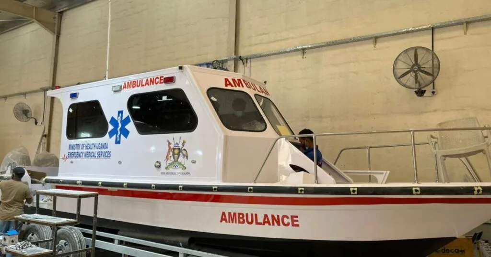

Expanded Nursing Uganda Explanation
Body Fluids, Transport & Homeostasis should be understood beyond a short definition. Link the concept to patient history, focused assessment, common risks, nursing priorities, documentation and evaluation of outcomes.
Contents, 23 sections (tap to expand)
01 The Body's Environments: Internal and External
The human body is a biological machine that does not exist alone. Rather, it exists within two distinct environments that constantly interact to maintain life, health, and functionality. To understand human physiology, we must first understand the boundaries and contents of these two environments.
02 1. The External Environment
- Description: The external environment encompasses all the surroundings completely outside the physical barrier of the body (the skin and mucosal linings). It includes the air we breathe into our lungs, the water we drink, and the food we ingest into our gastrointestinal tract. (Note: the inside of your stomach and intestines is technically considered the external environment until nutrients cross the intestinal wall into the blood!)
- Role (Intake): It serves as the ultimate source of survival, providing essential life-sustaining resources like molecular oxygen (O 2 ) and macronutrients/micronutrients for cells.
- Waste Removal (Output): The external environment simultaneously serves as a dumping ground for toxic metabolic waste products generated by the body (e.g., exhaling carbon dioxide into the air, excreting urea in urine, and passing feces).
03 2. The Internal Environment
- Description: The internal environment is the microscopic, fluid-filled space deeply enclosed within the body where living cells actually reside, function, and communicate.
- Key Component: Interstitial fluid (tissue fluid) . This fluid continuously bathes, surrounds, and nourishes almost all body cells (except for the dead, dry outer layers of the skin).
- Composition: It is mostly composed of water, acting as a universal solvent. However, it also contains a highly specific mixture of electrolytes (charged ions like sodium, potassium, and chloride), vital nutrients (glucose, amino acids), hormones (chemical messengers), and waste products traveling to excretory organs.
- Vital Role: The internal environment must be precisely and aggressively regulated to maintain a stable, unchanging state called Homeostasis . If this fluid becomes too acidic, too salty, or too hot, cells will rapidly die.
04 Subdivisions of the Internal Environment (Body Fluids)
The total body water is strictly divided into two distinct fluid compartments, separated by the selectively permeable cell membrane.
05 A. Extracellular Fluid (ECF)
- Description: All the fluid located outside of the cells. It acts as the body's internal delivery system. It includes blood plasma (inside blood vessels), lymph (inside lymphatic vessels), cerebrospinal fluid (bathing the brain and spinal cord), and interstitial fluid (between the cells).
- Composition: It is uniquely high in Sodium (Na + ) and Chloride (Cl - ) ions.
- Functions: Transports nutrients, oxygen, and hormones to target cells.
- Carries toxic metabolic waste products away from cells to the kidneys and lungs.
- Helps regulate overall body temperature and blood pH levels.
06 B. Intracellular Fluid (ICF)
- Description: The fluid trapped deeply within the cells themselves (the cytosol). This makes up the vast majority of the body's water.
- Composition: In stark contrast to ECF, the ICF is uniquely high in Potassium (K + ) ions.
- Regulation: The cell membrane actively and constantly controls the composition of ICF. It acts like a bouncer at a club, ensuring the right balance of ions and molecules is maintained for internal cellular processes (like energy production and DNA repair).
Key Takeaways on Environments:
- The internal environment is tightly regulated to maintain a stable state for optimal cell function.
- Extracellular and intracellular fluids possess completely different chemical compositions. This exact difference in sodium and potassium is absolutely essential for various physiological processes, most notably nerve impulse firing and muscle contraction.
- Disruptions in the delicate balance of these fluids can lead to severe, life-threatening health problems (e.g., severe dehydration or water toxicity).
07 HOMEOSTASIS
Homeostasis is arguably the most important concept in all of physiology. It refers to the body's dynamic ability to maintain a stable, constant internal environment within very narrow limits, despite wild and continuous changes in the external environment.
08 Control Systems of Homeostasis
The body uses vast communication networks (primarily the Nervous and Endocrine systems) to detect and instantly respond to changes in the internal environment.
The 3 Vital Components of a Control System:
- Detector (Receptor/Sensor): Monitors the internal environment, detects changes (stimuli), and sends this input information to the control center.
- Control Center (Integrator): Usually the brain (like the hypothalamus). It determines the "set point" or normal limits within which a variable factor should be maintained. It receives the input, processes it, and generates an output command.
- Effector: The muscle or gland that receives the command from the control center and physically carries out the instructions to fix the problem.
Classification of Homeostatic Feedback:
Homeostasis is maintained by two distinct types of feedback loops: Negative Feedback and Positive Feedback .
09 1. Negative Feedback Mechanism
Description: This is the most common regulatory mechanism in the human body. It responds to a stimulus by reversing or negating the effect of that stimulus. The ultimate goal is to maintain a steady, normal state. For example, if a variable rises too high, negative feedback will bring it back down to the normal level; if it drops too low, it pushes it back up.
Think of a domestic central heating system:
- Detector (Thermostat): Sensitive to the room temperature (the variable factor). It is wired to the control unit.
- Control Center (Boiler Control Unit): Has a set temperature (e.g., 20°C). It controls the boiler.
- Effector (The Boiler): When the thermostat senses the room is too cold (low temperature), it alerts the control center, which orders the boiler to heat up. Once the room hits 20°C, the thermostat detects this, tells the control center, and the boiler is ordered to shut off. The stimulus (cold) was reversed.
How the body controls its temperature:
- Detector: Thermoreceptors in the skin and brain detect that body temperature has dropped below 37°C.
- Control Center: The Hypothalamus in the brain receives this alert.
- Effector: The brain commands skeletal muscles to violently contract (shivering) to generate heat, and commands skin blood vessels to constrict (conserving core heat). Once 37°C is reached, the shivering stops.
Other variable factors controlled by negative feedback include:
- Blood Glucose Levels: If blood sugar is too high, the pancreas releases insulin (effector) to push glucose into cells, lowering blood sugar back to normal.
- Oxygen and Carbon Dioxide levels: If CO 2 builds up, the brain forces you to breathe faster to exhale it.
- Water and Electrolyte levels: If you are dehydrated, the kidneys hold onto water instead of making urine.
10 2. Positive Feedback Mechanism
Description: Sometimes referred to as cascade or amplifier systems. In stark contrast to negative feedback, this mechanism increases and amplifies the response progressively as long as the stimulus is present. It does not maintain stability; it drives a process to a massive, explosive completion.
- During labor, uterine contractions are stimulated by the hormone oxytocin .
- As the contractions push the fetus downwards, the baby's head presses violently against the uterine cervix.
- This stretching of the cervix stimulates stretch receptors (detectors), which send signals to the brain.
- The brain responds by releasing even more oxytocin into the blood.
- More oxytocin means stronger contractions, which pushes the head harder, which releases more oxytocin. This amplifying cycle continues until the ultimate climax: the baby is born (the stimulus is suddenly removed).
- When a blood vessel is torn, a few platelets cling to the injured site.
- These attached platelets release chemical signals that attract more platelets.
- The new platelets release even more chemicals, attracting a massive swarm of platelets.
- This amplification cascade continues until a large, solid platelet plug is formed, stopping the bleeding completely.
(Note: Action potentials in nerve cells are also driven by positive feedback, a small entry of sodium causes massive sodium channels to open, firing the nerve).
11 Homeostatic Imbalance
A homeostatic imbalance occurs when the body's control systems completely fail to maintain homeostasis, resulting in an abnormal, chaotic state.
- When the body's controlled conditions remain within narrow limits, body cells function efficiently, negative feedback systems maintain homeostasis, and the body stays healthy.
- However, if one or more components (the detector, control center, or effector) lose their ability to contribute to homeostasis, the normal equilibrium among body processes is severely disturbed.
- Moderate Imbalance: Can lead to a disorder or disease (e.g., if the pancreas fails to regulate glucose, the patient develops Diabetes Mellitus).
- Severe Imbalance: May rapidly result in death (e.g., if the body loses the ability to regulate core temperature, resulting in fatal heatstroke).
12 MOVEMENT OF SUBSTANCES WITHIN BODY FLUIDS
Movement of substances within and between body fluids, often across physical barriers like cell membranes, is absolutely vital for normal physiology. The plasma membrane's unique structure grants it selective permeability . It acts as a strict border guard, allowing only certain substances to pass based on their physical size, electrical charge, and lipid-solubility.
The Main Types of Movement:
- Passive Transport (No energy required)
- Active Transport (Cellular energy required)
13 1. Passive Transport
Description: Movement of substances down their concentration gradient (flowing naturally like water down a hill, from an area of HIGH concentration to an area of LOW concentration) until equilibrium is perfectly reached. This process happens spontaneously and does not require any cellular energy (ATP) .
There are two main methods of passive transport: Diffusion and Osmosis .
14 A. Diffusion
Definition: The movement of molecules from an area of high concentration to an area of low concentration, occurring mainly in gases, liquids, and solutions. There are two sub-types:
- Simple Diffusion: Everyday Example: If you drop sugar molecules at the bottom of a cup of coffee, over time, the sugar will distribute evenly throughout the entire liquid by simple diffusion. This process speeds up if you increase the temperature (hot coffee) or increase the concentration of the diffusing substance.
- Across Human Membranes: Diffusion can occur across semi-permeable membranes like the plasma membrane or capillary walls. However, only molecules that are very small or highly lipid-soluble can diffuse through unaided.
- Clinical Example: Oxygen (O 2 ) diffuses freely through the thin walls of the alveoli (air sacs in the lungs), where oxygen concentration is very high, straight into the bloodstream, where oxygen concentration is low. Blood cells and large protein molecules in the plasma are physically too large to cross the alveolar membrane and remain safely in the blood.
- Facilitated Diffusion: Process: This passive process is utilized by larger, water-soluble substances like glucose and amino acids that cannot simply melt through the fat-based semi-permeable membrane unaided.
- Mechanism: Specialized protein carriers embedded in the membrane have specific binding sites that attract these substances, functioning exactly like a lock and key mechanism . The carrier attracts the molecule, undergoes a physical change in shape, and deposits the substance on the other side of the membrane. Crucially, these carrier sites are highly specific to one particular substance.
- Limitation (Transport Maximum): There is a finite, limited number of these protein carriers on the cell surface. This limits the total amount of substance that can be transported at any given time. Once all carriers are full and busy, the rate of diffusion hits a ceiling. This is known as the transport maximum .
15 B. Osmosis (The Diffusion of Water)
Definition: The specific movement of water molecules from a region of high water concentration (a dilute, watery solution) to a region of low water concentration (a thick, highly concentrated solution) across a semi-permeable membrane. The powerful, magnetic force driving this water movement is called osmotic pressure .
Imagine two sugar solutions separated by a semi-permeable membrane. The membrane has pores that are too small for the large sugar molecules to pass through, but large enough for water to pass. On one side, the sugar solution is twice as concentrated as the other side.
Because the sugar cannot move to balance the concentration, the water does the work. Osmotic pressure physically pulls water from the dilute (watery) solution over into the highly concentrated sugar solution. This continues until equilibrium is reached, with equal concentrations on both sides of the membrane. This balanced state is known as isotonic conditions .
Plasma Osmolarity and Red Blood Cells (RBCs):
The importance of strictly controlling solute concentrations in body fluids is perfectly illustrated by the behavior of red blood cells when exposed to different intravenous (IV) solutions.
- Maintenance: Plasma osmolarity is maintained within a very narrow, strict range.
- Hypotonic Condition (Cell Swelling/Hemolysis): If plasma water concentration rises (making the plasma more dilute and watery than the intracellular fluid inside the red blood cells), water will move violently down its concentration gradient directly into the red blood cells. The red blood cells will swell like balloons and may eventually burst. This deadly condition is hypotonicity.
- Hypertonic Condition (Cell Shrinking/Crenation): If plasma water concentration falls (making the plasma highly concentrated with salt/solutes compared to the inside of the cell), osmotic pressure pulls water out of the blood cells and into the plasma. This causes the blood cells to severely shrink, shrivel, and collapse, a condition known as crenation in a hypertonic environment.
When giving a patient an IV drip, doctors must choose the exact right fluid based on osmosis:
- Hypotonic Solutions: Have a lower concentration of solutes than human blood. Water will leave the blood and enter the cells. Example: ½ strength Darrow's solution . Used cautiously when cells are severely dehydrated.
- Hypertonic Solutions: Have a higher concentration of solutes than human blood. Draws water out of swollen cells and into the blood. Example: Glucose 50% . Used in severe hypoglycemia or to reduce brain swelling.
- Isotonic Solutions: Have the exact same concentration as human blood. No net movement of water into or out of cells; it just safely increases total blood volume. Examples: Normal Saline (0.9% NaCl), Ringer's Lactate, Dextrose 5% in water (D5W) . Heavily used to treat blood loss or general dehydration.
16 2. Active Transport
Definition: The forceful transport of substances up or against their concentration gradient (pushing a boulder up a hill, from an area of lower concentration to an area of higher concentration).
- Energy Requirement: Because it goes against nature, this process strictly requires chemical energy in the form of ATP (Adenosine Triphosphate) .
- Mechanism: Specialized protein carriers in the membrane act as powerful pumps. They physically transport substances across the membrane, using up an astonishing up to 30% of total cellular ATP just to keep these pumps running.
- Specificity: Just like facilitated diffusion, these carrier sites are highly specific to one type of substance, and the rate of transfer depends entirely on the number of available pump sites.
17 Types of Active Transport
1. The Sodium-Potassium (Na+/K+) Pump
- Function: This is the most famous active transport pump. It actively maintains the unequal, life-sustaining concentrations of sodium (Na + ) and potassium (K + ) ions on either side of the plasma membrane, consuming up to 30% of all cellular ATP to do so.
- Ion Distribution (The Rule): Potassium levels are kept much higher inside the cell (K + is the principal intracellular cation). Conversely, sodium levels are kept much higher outside the cell (Na + is the principal extracellular cation).
- Mechanism: Naturally, potassium tends to leak outwards, and sodium tends to leak deeply into the cell. To prevent this, the pump grabs the invading sodium and constantly pumps it back OUT of the cell, in direct exchange for grabbing escaped potassium and pumping it back IN. (Specifically, it pumps 3 Sodium out for every 2 Potassium in).
2. Bulk Transport (Vesicular Transport)
Definition: The massive transfer of particles or liquid droplets that are simply too large to cross cell membranes via normal protein carriers or pumps. The cell physically wraps its membrane around the material.
- Endocytosis (Bringing things IN): Pinocytosis ("Cell Drinking"): Small liquid particles and extracellular fluids are engulfed by tiny extensions of the cytoplasm. The membrane folds inward, pinching off to form a tiny, membrane-bound vacuole (vesicle) inside the cell.
- Phagocytosis ("Cell Eating"): Used for massive, solid particles. White blood cells (like macrophages) use this to hunt down and take in cell fragments, foreign materials, and dangerous microbes (bacteria). Once the bacteria is swallowed into a vacuole, organelles called Lysosomes adhere to the vacuole membrane, releasing highly toxic digestive enzymes to completely digest and destroy the contents.
- Exocytosis (Pushing things OUT): The active export of large waste materials or manufactured products through the plasma membrane to the outside of the cell.
- Secretory granules formed deeply within the cell by the Golgi apparatus (like hormones or neurotransmitters), as well as the indigestible garbage residues left over from phagocytosis, are pushed to the membrane. The vesicle fuses with the cell membrane, popping open and ejecting its contents outside. (Example: Pancreatic cells use exocytosis to dump massive amounts of insulin into the blood after a meal).
Quick Quiz
18 Environment, Homeostasis & Transport Qiuz
Anatomy - mobile-friendly and focused practice.
Privacy: Your details are used only for quiz tracking and certificates.
19 Environment, Homeostasis & Transport Qiuz
Anatomy
Here is your quick performance summary.
20 Nursing Uganda Clinical Lens
Use Body Fluids, Transport & Homeostasis as a practical nursing topic, not only a memorized definition. Prioritize airway, breathing, circulation, pain, asepsis, wound healing and early complication detection.
- What to understand first: define body fluids, transport & homeostasis, identify the normal or expected pattern, then explain what changes when the patient is unwell.
- Why it matters in care: the nurse must recognize risk early, explain findings clearly, document accurately and know when to escalate.
- How to revise it: connect each point to assessment, nursing diagnosis or care problem, intervention, rationale and evaluation.
21 Assessment Guide
- Vital signs, pain, bleeding, perfusion, level of consciousness and injury pattern.
- Wound appearance, drainage, odour, swelling, temperature and surrounding skin.
- Fluid balance, mobility, nutrition, surgical site risk and ordered investigations.
22 Nursing Priorities, Rationales and Outcomes
- Stabilize urgent problems first, then prepare for investigations or theatre care.
- Maintain aseptic technique, pain control, wound care and documentation.
- Prevent shock, infection, pressure injury, deep vein thrombosis and delayed healing.
The rationale for these priorities is patient safety: nursing actions should prevent deterioration, reduce discomfort, support recovery and create clear evidence for the next caregiver.
- Expected outcome: The patient remains stable, wound healing progresses, pain is controlled and complications are recognized early.
23 Patient Teaching and Revision Check
- Explain body fluids, transport & homeostasis in simple language the patient or caregiver can repeat back.
- Teach warning signs, medicine or follow-up instructions, hygiene or lifestyle points where relevant.
- For exams, prepare a short answer using: definition, causes or risk factors, signs, assessment, management, complications and prevention.
- For ward practice, document baseline findings, actions taken, patient response and the plan for review.
Illustrations and Diagrams (1)

Related Video Lectures
Watch nursing lecture videos on YouTube for this topic. Opens in a new tab.
Watch on YouTubeExternal link: YouTube may use its own cookies and terms. Nursing Uganda is not affiliated with YouTube.